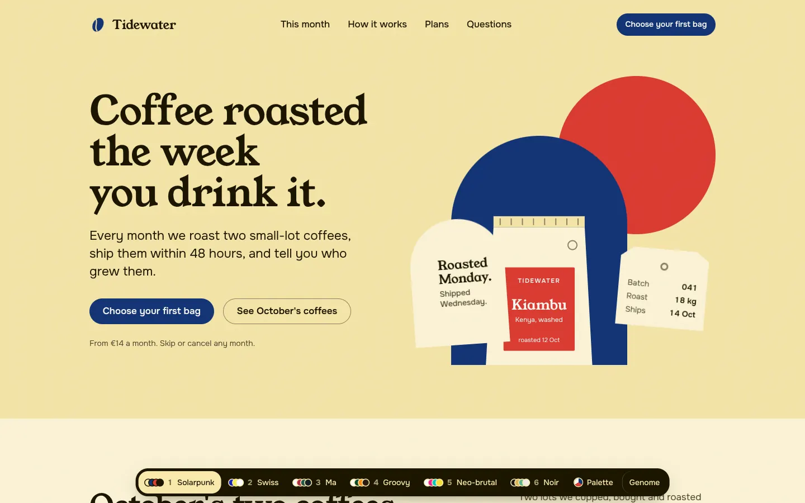
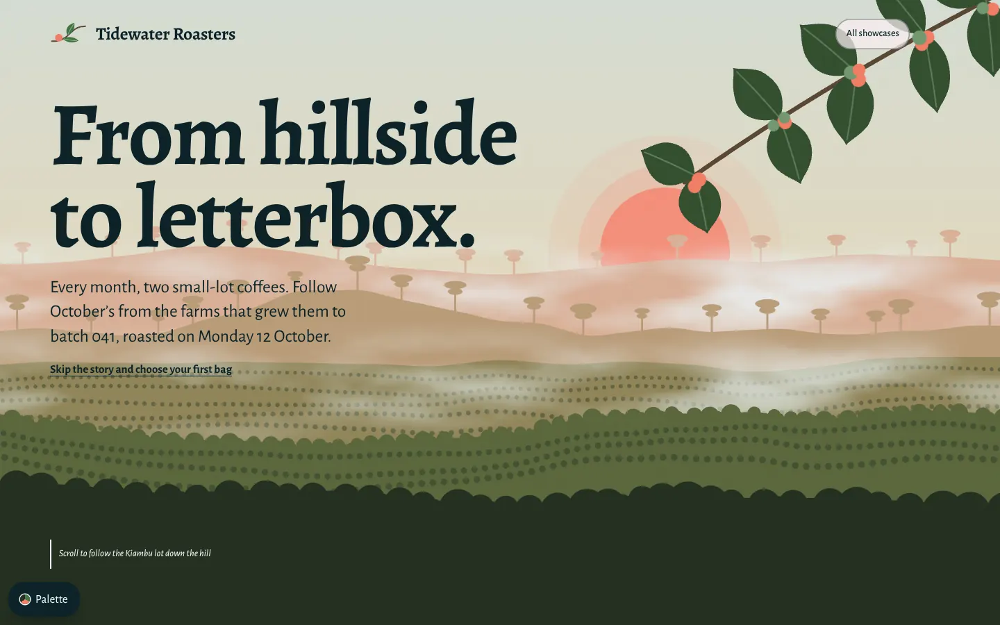
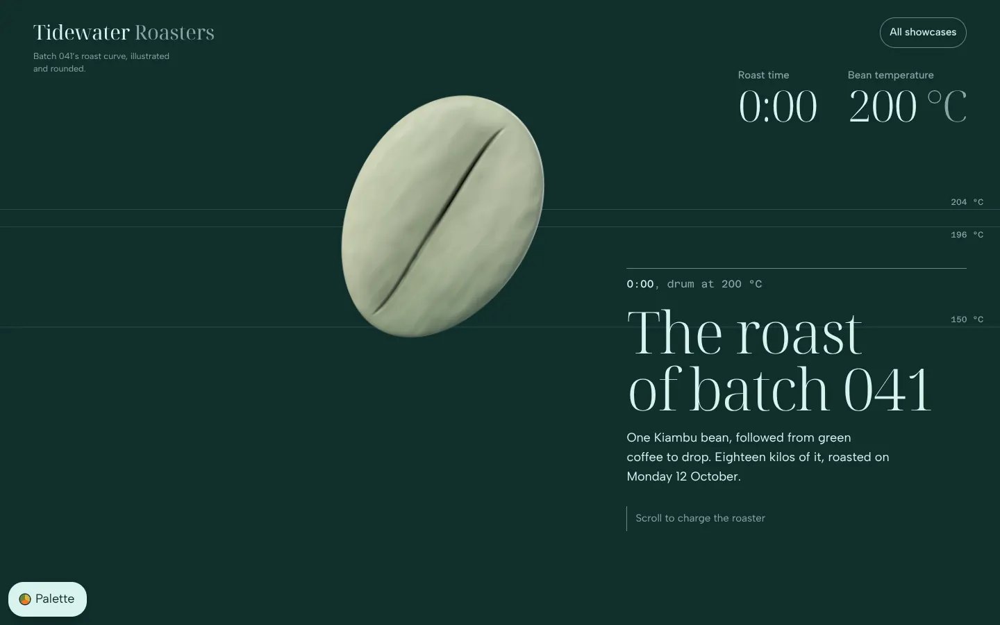
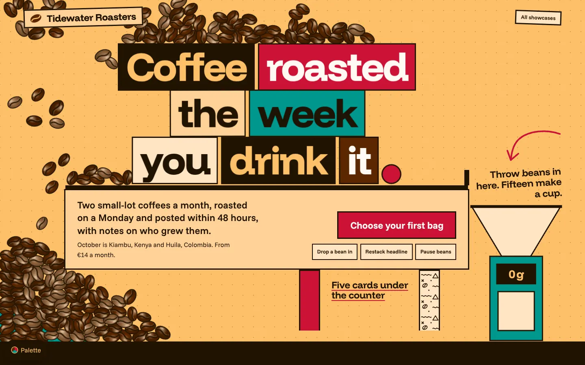
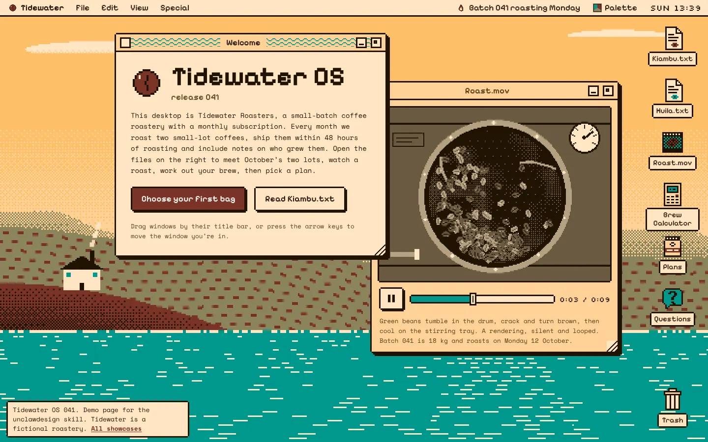
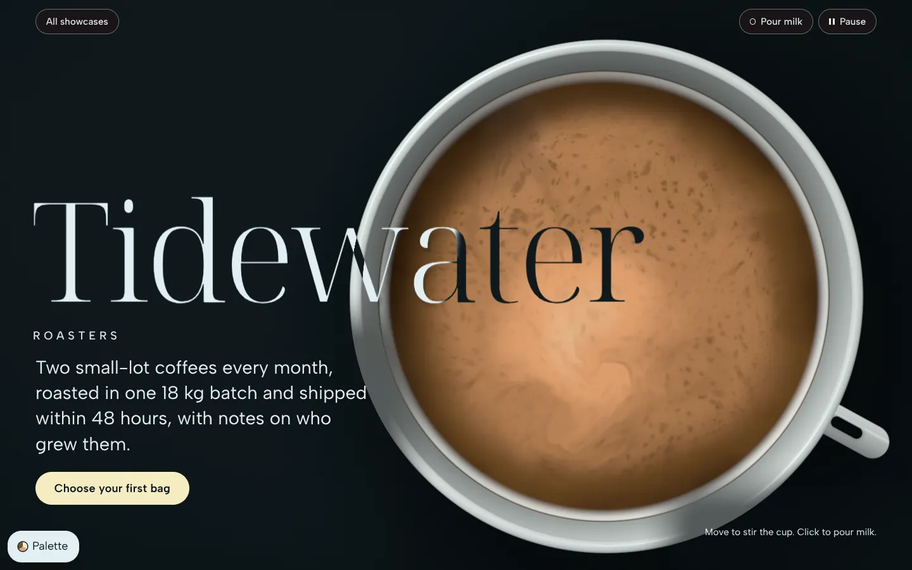
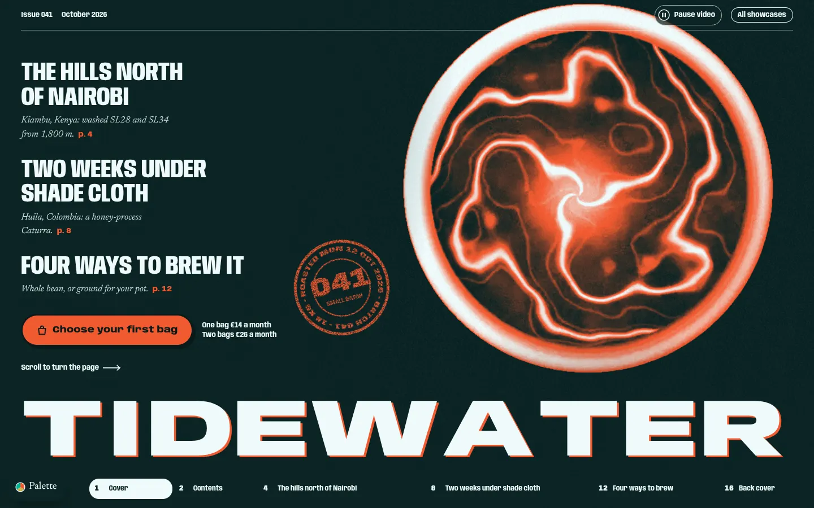

Sechs Richtungen, eine Seite
Dieselben Inhalte in sechs gewürfelten Genomen (Stil × Palette × Schriftpaar × Gene). Unten im Dock umschalten, rechts das Genom ansehen.

Tidewater: Six Directions
Solarpunk, Swiss, Japanisches Ma, 70er Groovy, Neo-Brutalismus und Dark Luxury, live umschaltbar, mit Genom-Panel und Paletten-Editor.
landing-classic × 6 StileSechs Erlebnisse
Derselbe Brief als Erlebnis gebaut: jede Seite ein anderer Archetyp aus der Recherche, mit eigener Bewegung, eigenen Medien und einer Fassung für reduzierte Bewegung.

Cherry to Cup
Von der Kirsche bis zum Briefkasten als Reise in Parallax-Kapiteln.
Parallax-Scrollytelling
The Roast
Eine Bohne röstet Bild für Bild beim Scrollen, mit Zeit und Temperatur.
Scroll-Sequenz
Bean Box
Wörter und Bohnen mit Masse: werfen, stapeln, in den Trichter füllen.
Physik-Spielplatz
Tidewater OS
Die Rösterei als Betriebssystem mit Fenstern, Dateien und Papierkorb.
OS-Desktop
Crema
Eine simulierte Crema als Seitengrund, die man mit der Maus umrührt.
WebGL-Flüssigkeit
Issue 041
Ein Magazinheft, durch das man seitwärts blättert.
Horizontales MagazinUnd angewendet: jurasongs.de
Sechs vollständige Varianten der echten Website (Reel-Feed, Karaoke-Bühne, Großkommentar, Plattenkiste, Examens-Weltkarte, Radio-Skala) liegen im Repo Tonvenio/jurasongs unter variants/. Ansehen über den Mobot-Hub (/jurasongs/variants/) oder dort mit python3 variants/tools/serve.py.